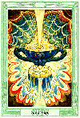

Mancias
La palabra mancia significa adivinación, hay numerosas herramientas
oraculares para adivinar, que a mi visión es atraer lo divino a la
tierra para ser comunicado. Es muy importante en todo este conocimiento
tener en cuenta la pureza de canal que pueda tener cada lector,
cada profesional que realice una mancia. No se puede juzgar un conocimiento
por cómo lee un canal, para lo cual debemos recordar que siempre el mensaje
que nos es dado lo tenemos que sentir resonar en lo más profundo de nuestro
ser para darnos cuenta si es verdadero ya que no siempre el lector está
con sus canales perceptivos abiertos.
Los mensajes recibidos deben tener profundidad y ser la puerta para hacer
los cambios necesarios para lograr una mayor evolución. El objetivo de la
adivinación es saber el mensaje divino con respecto a una situación, relación,
para poder obrar de la mejor manera en vías del bien colectivo.
Les presento algunas mancias que considero de gran profundidad, ya que en el
mundo ancestral se presentaron las runas celtas, el calendario sagrado maya y el
tarot egipcio.
Tarot
El tarot es una herramienta adivinatoria la cual permite dar un mensaje a
través de la tirada de cartas. En mundo ancestral cuando hablamos de la
cultura egipcia expusimos el tarot egipcio. Al igual que con la cafeomancia
no se tiene certeza del origen de esta herramienta adivinatoria, personalmente
el tarot que siento más profundo y original es el egipcio. Igualmente en este
segmento hablaremos de otras versiones de esta herramienta oracular.
El Tarot es una herramienta para despertar nuestras facultades intuitivas y
ponernos en contacto con nuestro mundo interior. Es un sistema metafórico que
nos lleva ...
sobre el camino del héroe mítico, un camino de aventura y auto
descubrimiento. Utilizando los símbolos arquetípicos de las cartas del Tarot
y su relación con los asuntos diarios de la vida, podemos explorar nuestras
mitologías personales y ver más claramente la realidad de nuestra existencia.
En esencia, el Tarot es un medio para la meditación, reflexión, contemplación,
análisis de problemas, clarificación de decisiones, estimulación de la intuición,
auto entendimiento, crecimiento espiritual y adivinación. Las cartas del Tarot nos
permiten explorar una dimensión del universo que de otra manera puede ser inaccesible.
No son necesariamente predictivas pero a menudo adquieren dicha característica. Siempre
ofrecen una visión alternativa y una nueva perspectiva concerniente a los problemas
de la vida.
Tarot Egipcio
>> Ver sección mundo ancestral egipcios
Tarot Osho Zen
 En la sección Mundo Ancestral hay una pequeña reseña de este gran
maestro de la iluminación que nos dejará tantos mensajes para la
evolución del ser, tengo que reconocer públicamente que además del
tarot egipcio el tarot de Osho es una herramienta que calificó de
excelente en la búsqueda de la luz.
En la sección Mundo Ancestral hay una pequeña reseña de este gran
maestro de la iluminación que nos dejará tantos mensajes para la
evolución del ser, tengo que reconocer públicamente que además del
tarot egipcio el tarot de Osho es una herramienta que calificó de
excelente en la búsqueda de la luz.
El "Tarot Osho Zen" no es un tarot como los demás. No se orienta hacia
el pasado o el futuro, como otros, sino que se centra en captar y
comprender el aquí y el ahora. Está basado en la sabiduría Zen, la
cual afirma que los sucesos del mundo exterior son siempre un reflejo
de lo que pensamos o sentimos incluso cuando no somos conscientes de
nuestros pensamientos o nuestros sentimientos.
En consecuencia, el tarot nos ayuda a apartar nuestra atención de
los acontecimientos externos para así poder encontrar una nueva
claridad a través de la comprensión de lo que aquí y ahora está
ocurriendo en nuestro fuero interno. En este TAROT OSHO ZEN, está la
carta de El Maestro, la que nos permite dejar atrás la espiral y dar
un salto fuera de la rueda de muerte y renacimiento. El Maestro
simboliza la trascendencia suprema de la travesía en sí misma,
una trascendencia que se hace posible únicamente cuando el ego
individual y separado se disuelve en la iluminación.
En definitiva, el TAROT OSHO ZEN, no es un tarot tradicional en el
sentido de jugar en base a predicciones. Es más bien un juego trascendental
zen que refleja el momento, mostrando constantemente lo que hay aquí y ahora,
sin juicio ni comparación. Este juego es una llamada a despertar, a
sintonizar con la sensibilidad, la intuición, la receptividad, el
coraje y la individualidad.
En este momento hay muchísimos tarot y oráculos a continuación menciono
algunos de ellos.
 Tarot Visconti-Sforza: Es una de las barajas mejor conservadas gracias al
mecenazgo de los Visconti-Sforza, y una de las más antiguas que se han
hallado. Es un tarot moderno para su época, aunque con algún elemento
antiguo salteado.
Tarot Visconti-Sforza: Es una de las barajas mejor conservadas gracias al
mecenazgo de los Visconti-Sforza, y una de las más antiguas que se han
hallado. Es un tarot moderno para su época, aunque con algún elemento
antiguo salteado.
Tarot De Marseilles
 Tarot de Papus (Tarot de los bohemios): En 1889 Gerard Encausse, conocido
por el sobrenombre de Papus, público el tarot de los bohemios, más conocido
por tarot del Papus. Encausse, que estudió medicina y extendió el ocultismo
por Europa, creó un tarot de estilo egipcio y que alcanzó gran popularidad.
Tarot de Papus (Tarot de los bohemios): En 1889 Gerard Encausse, conocido
por el sobrenombre de Papus, público el tarot de los bohemios, más conocido
por tarot del Papus. Encausse, que estudió medicina y extendió el ocultismo
por Europa, creó un tarot de estilo egipcio y que alcanzó gran popularidad.
 Tarot Céltico: El tarot de Alan Borvo es el que se conoce como tarot
céltico. Tiene 72 láminas de las cuales 18 son mayores. Las cartas tienen
relación con el año céltico y es bastante diferente del tarot de Marsella.
Tarot Céltico: El tarot de Alan Borvo es el que se conoce como tarot
céltico. Tiene 72 láminas de las cuales 18 son mayores. Las cartas tienen
relación con el año céltico y es bastante diferente del tarot de Marsella.
 Tarot de Waite: Tarot que proviene del siglo XVIII, y que fue desarrollado
por este admirador de Levi y Papus y estudioso de la Cábala. Reinventó el
estilo del tarot de Marsella y le adaptó elementos nuevos, como por ejemplo
eliminando las letras hebreas. Este tarot, que fue pintado por Pamela
Colman, fue muy bien acogido sobre todo en América. Se publicó en Londres,
en 1910, por parte de la editorial Rider, cayendo paulatinamente en el
olvido, hasta que la hija de Rider Waite vendió los derechos de
reproducción de los dibujos originales en 1971 a la casa U.S. Games. Este
fue el inicio de un éxito avasallador, expandiéndose su uso por el mundo y
haciéndose tan popular como el tarot de Marsella. Una peculiaridad de este
tarot es que los arcanos menores son aquí tan relevantes como los mayores.
Tarot de Waite: Tarot que proviene del siglo XVIII, y que fue desarrollado
por este admirador de Levi y Papus y estudioso de la Cábala. Reinventó el
estilo del tarot de Marsella y le adaptó elementos nuevos, como por ejemplo
eliminando las letras hebreas. Este tarot, que fue pintado por Pamela
Colman, fue muy bien acogido sobre todo en América. Se publicó en Londres,
en 1910, por parte de la editorial Rider, cayendo paulatinamente en el
olvido, hasta que la hija de Rider Waite vendió los derechos de
reproducción de los dibujos originales en 1971 a la casa U.S. Games. Este
fue el inicio de un éxito avasallador, expandiéndose su uso por el mundo y
haciéndose tan popular como el tarot de Marsella. Una peculiaridad de este
tarot es que los arcanos menores son aquí tan relevantes como los mayores.

Tarot de Aleister Crowley: Lady Frieda Harris, mujer del parlamentario
británico Sir Harris, pintó en acuarela entre 1938 y 1942 el tarot de
Aleister Crowley. Se publico en blanco y negro en 1944, no siendo hasta
1969 cuando aparece en dos colores, siempre con un estilo surrealista
abstracto. Ya en 1977 fue publicado a todo color pero sus autores ya habían
fallecido, no llegándolo a ver. El tarot lleva el nombre de Aleister
Crowley, excéntrico poeta británico, amante de las ciencias ocultas y
creador de varias sectas, muy amigo de Lady Harris, a la que conoció en
1937, y con la que creó dicho tarot, con imágenes muy detalladas y llenas
de fantasía.
 Tarot Kabala: Este tarot tiene la particularidad de que pretende adivinar
el futuro, como los demás tarots, pero no el inmediato, sino el que vendrá
a largo plazo. Se basa en la gnosis difundida por Samael Aun Weor, y tiene
muchos rasgos del tarot egipcio. Aunque en sus comienzos fue considerado
más elitista, al alcance de unos pocos, como muchos gnósticos han ido
aplicándole sus estudios y normas, en la actualidad se le considera algo
más corriente.
Tarot Kabala: Este tarot tiene la particularidad de que pretende adivinar
el futuro, como los demás tarots, pero no el inmediato, sino el que vendrá
a largo plazo. Se basa en la gnosis difundida por Samael Aun Weor, y tiene
muchos rasgos del tarot egipcio. Aunque en sus comienzos fue considerado
más elitista, al alcance de unos pocos, como muchos gnósticos han ido
aplicándole sus estudios y normas, en la actualidad se le considera algo
más corriente.